一、IE浏览器设置
1.打开IE浏览器菜单中的【工具】-->【Internet选项】：
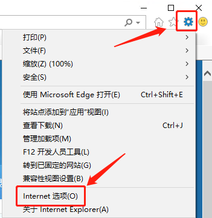
2.常规-->【设置】：
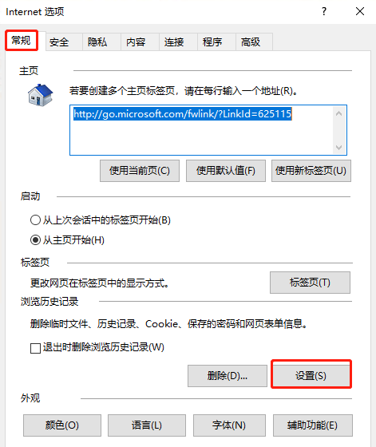
3.选择【每次访问网页时】-->确定：
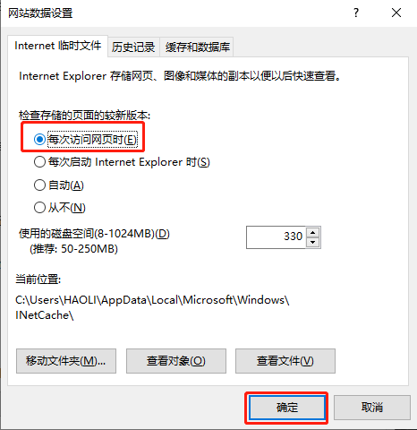
4.清除本地浏览器缓存【删除】-->【临时Internet文件和网站文件】-->【删除】：
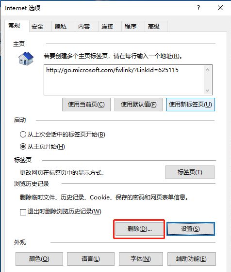
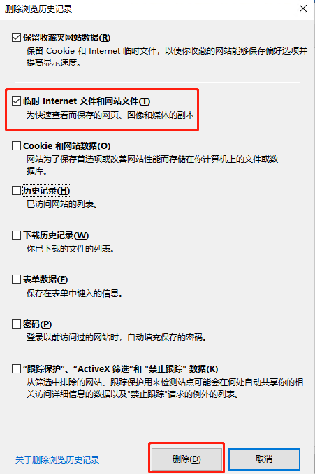
5.点【确定】后，关闭浏览器，重新打开后再操作：
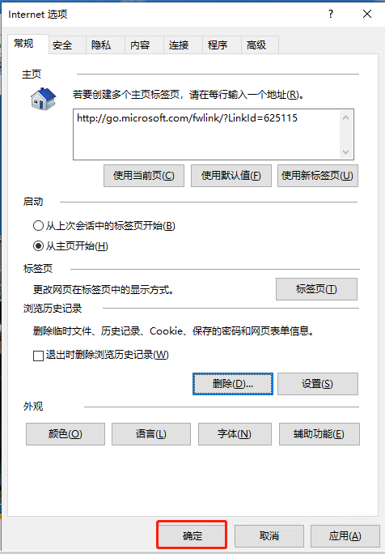
二、360浏览器设置
使用【360浏览器】时，还需要删除该浏览器的缓存，按住组合键【Ctrl+Shift+Delete】打开：
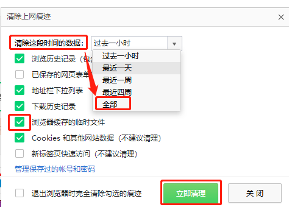
三、谷歌chrome / Edge
1.打开浏览器后，点右上角【...】-->【设置】：
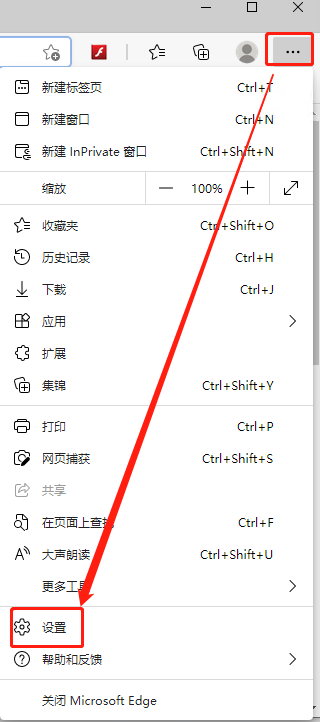
2.点【隐私、搜索和服务】-->【选择要清除的内容】：
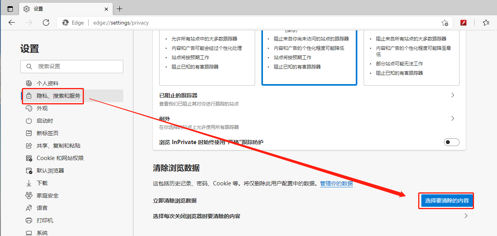
3.时间范围选择【所有时间】、勾选【缓存的图像和文件】，点【立即清除】：
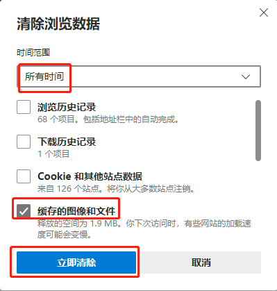
四、搜狗浏览器
1.打开浏览器后，点右上角【三】-->【清除浏览记录】：
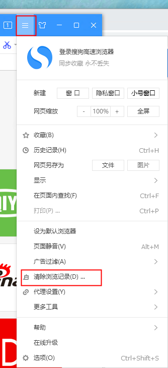
2.勾选【网页缓存文件】，点【立即清除】：
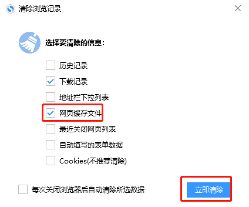